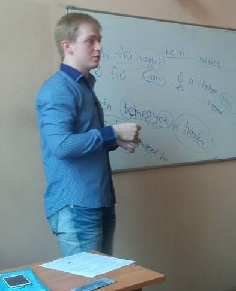

Японский язык /
Япойнаг æвзаг
Владикавказ/Дзæуджыхъæу, 25.11.2019
Дэн Патин,
dpat.in
Привет! Байрай! こんにちは！
Кто я такой?
Денис Па́тин
⇨ Дэн Па́тин / Den Patin
telegram/instagram/vk/twitter: @denpatin
Череповец ↣ Петербург
программист* / лингвист* / преподаватель*

венгерский
немецкий / итальянский
японский / китайский
кыргызский / узбекский
осетинский / таджикский
румынский / албанский
Поехали!
Райдайӕм!
始めましょう！
Письменность
Кандзи 漢字
Хирагана ひらがな
Катакана カタカナ
Окуригана
働く、働かない
Фуригана
私
わたし
たちは
ロシア
ろしあ
に
住
す
んでいます。
Кандзи
пиктограммы
указательные
идеограммы
идеофонограммы
Пиктограммы
口
雨
心
Указательные
上
下
Идеограммы
命
立
Идеофонограммы
言: 語 記 訳 説
雨: 雲 電 雷 雪
Сколько иероглифов?
1006 «кё:ику кандзи»
2136 «дзё:ё: кандзи»
3121 «дзиммэйё: кандзи»
東京
を
象徴
している
ロボット
みたい
な
ビル
の
街
水
人
田
月
回
木
林
森
山
火
川
愛
Вопросы?
Фарстытæ?
質問はありますか。